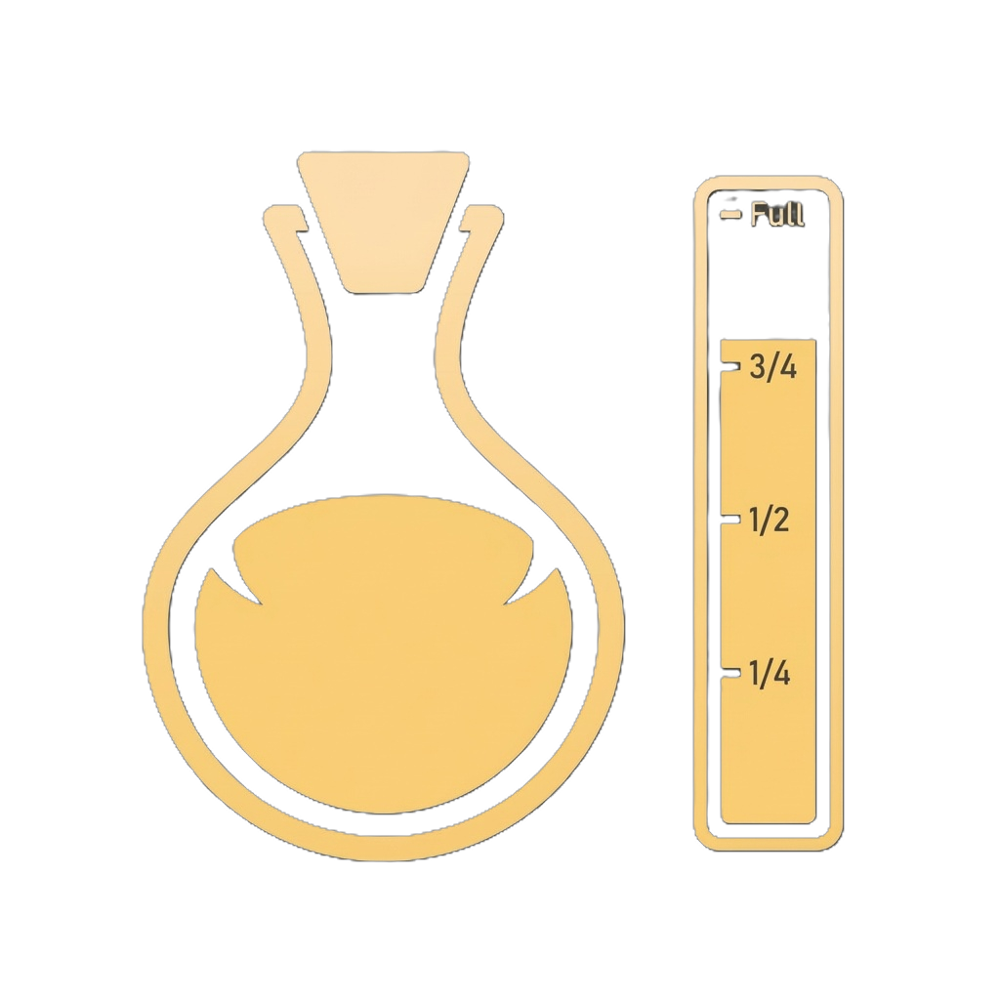

Max Health
Your life pool. One point is one maximum life. Floor and rope traps, soul burn, and percent heals all read this number. Equipment can add more.
Your character
These are the stats on your status screen and the fight numbers you can see. Equipment and some dungeon effects add on top of what you allocate. Hidden reserved defenses are not listed here.
Numbers that change how a fight plays. Some rise with your level on their own. Others you spend points on.
Your life pool. One point is one maximum life. Floor and rope traps, soul burn, and percent heals all read this number. Equipment can add more.

How much mana you get each of your turns. Playing a card spends its cost even if Confusion makes it fizzle. This rises with your level. Some cards and pets can add mana for the current turn only.
How many cards you draw at the start of your action. This rises with your level. Battle Focus and some pets draw extra on top.
Who acts first in a fight. Highest speed goes first. If two fighters share the same speed, the previous turn’s order is kept. Fast Poison on a pet uses your speed to decide how much poison it applies.
Added to Physical and Physical Piercing damage on your cards. Two Strength points add one damage (the game keeps the leftover half internally, then drops the fraction). It does not boost pet attacks, Mimic Bite, or damage-over-time.

Same rule as Strength, for Magical and Magical Piercing card hits. Two Intelligence points add one damage. Pet magic hits and percent-of-life spells do not use this.
Each point is 1% accuracy. A hit’s dodge chance is the target’s evasion minus this accuracy. If that result is not above zero, the attack cannot be dodged. Your pets use your accuracy when they attack.

Each point is 1% evasion. You only roll a dodge when your evasion is higher than the attacker’s accuracy. Poison, burn and bleed ticks do not roll dodge.

Each point is 0.8% chance that a card hit crits. Crits are rolled when the card’s damage is calculated. Pets do not crit this way.
Each point is +1% extra on a crit. A crit multiplies the post-crit base by (1 + this bonus), then drops the fraction. Weakness and Double Next Damage apply after that.
Stats that change a run outside the raw hit formula.
Widens the hope window on the trap timing game. More points make the safe tap larger, up to a cap so it never covers the whole bar. It does not skip the challenge or reveal the trap type.
Each point is a 2% luck factor. On monster loot it raises the chance that the roll gives an item instead of nothing, without changing the mix among the items that do drop. After a fight it also shifts power-up choices away from Common toward the rarer tiers, while keeping the ratios among those rarer tiers. It also helps dungeon chests and the exit portal minigame. Luck consumables add to this for the rest of the dungeon.
Gives extra time on the pet-capture tap game. Each point adds a short slice of time, up to a cap. It does not shorten pet ability cooldowns — that is a card spell, not this stat.
How many cards, potions, consumables and relics you can take.
How many cards you must put in your battle deck. You cannot enter a dungeon unless the deck is exactly that size. This rises with your level.
How many different potion types you can pack for a dungeon. Locked slots stay locked until this stat unlocks them.

How many of one potion you can put in a single slot.
How many different consumables you can pack in the dungeon drawer. Provision is not one of these slots.
How many of one consumable you can put in a single drawer slot.
Space in your home inventory, not the pet’s dungeon backpack. Shop extras can add more on top. The backpack you carry in a run is the pet’s own capacity.
How many relics you can take into a dungeon.
Stats that matter at the forge, the card table, or on the status list.
Required to awaken a card. Your Leadership must be higher than that card’s current stars. Coins are a separate cost. The first awakening in an account can be free of coins; Leadership is still required.
Each point is 2% at the forge: cheaper repairs, more materials when you recycle, and a durability cushion on gear. That cushion soaks wear before the item’s real durability is used. Broken gear loses the cushion.
It is on your status screen. The in-game line talks about potion crafting. I did not find any potion brew or potion-use code that reads this number.
No attribute matches that search.